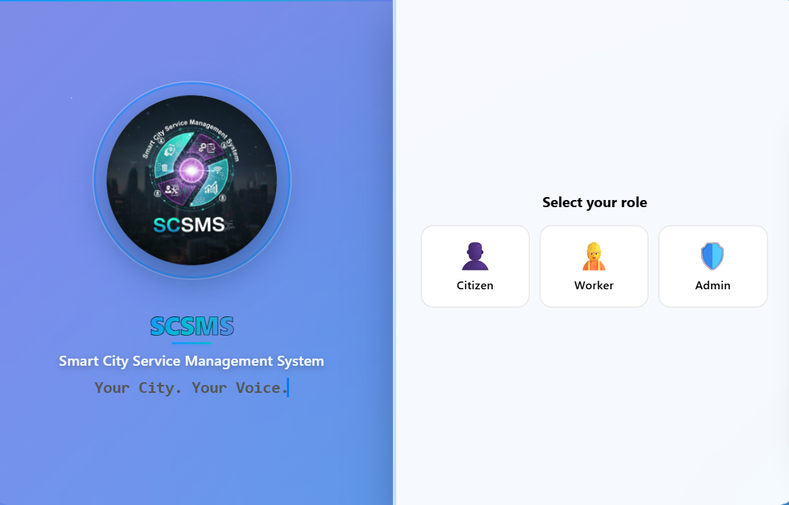

01
SCSMS: Smart City Service Management System
A platform where citizens report problems in their city and administrators work through them, with changes showing up live on both sides.
- Role
- Solo build: API, database and front end
- Stack
- Node.js, Express, MySQL, Socket.IO, Leaflet.js, OpenStreetMap

- Problem
- A reported issue has to reach an administrator quickly, and the citizen has to see its status change without refreshing anything.
- Decision
- Socket.IO pushes new reports and status changes instead of the client polling, and role-based access (citizen or administrator) is enforced on the server rather than hidden in the UI.
- Result
- 40% lower issue-reporting latency after moving to Socket.IO.